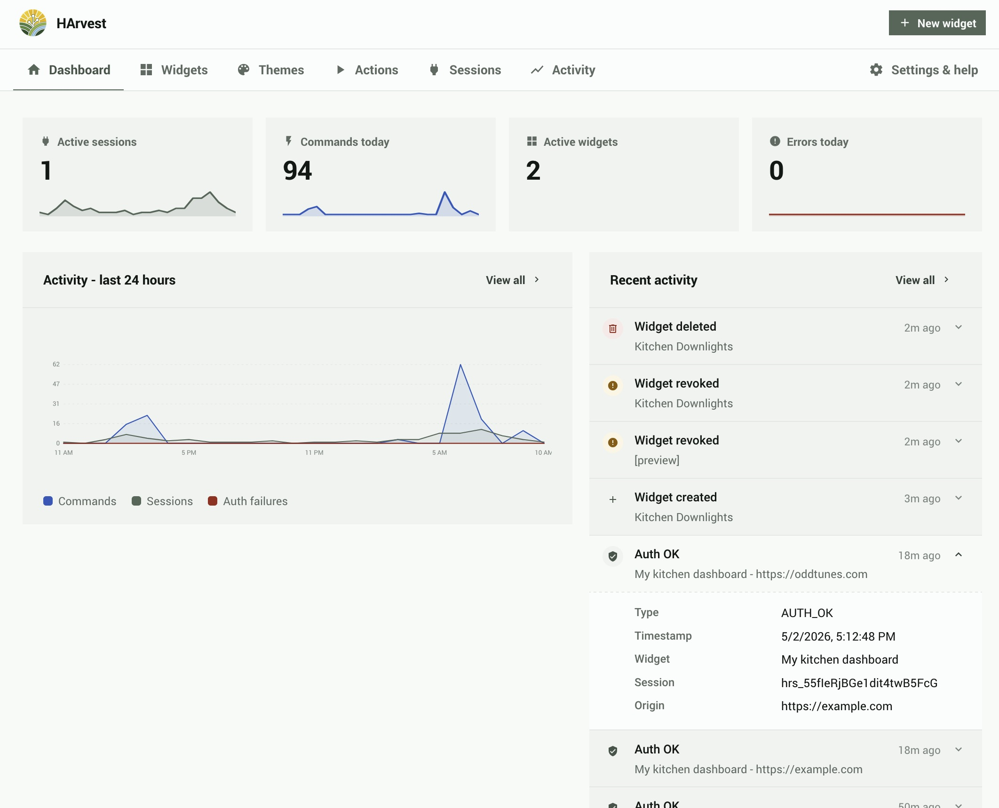
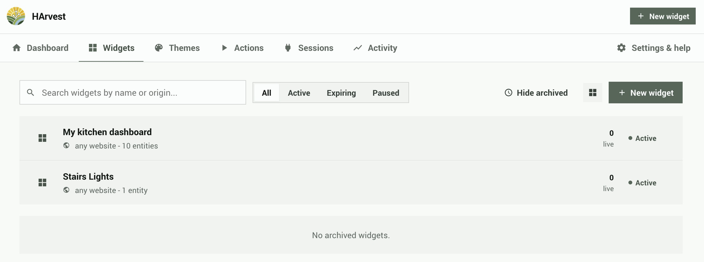
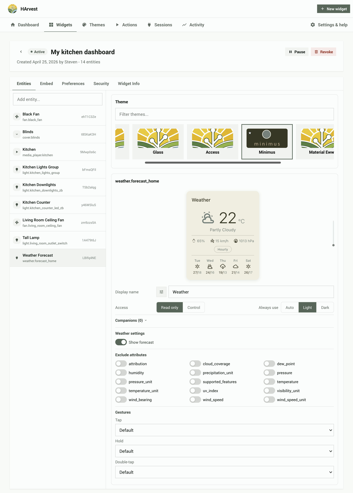
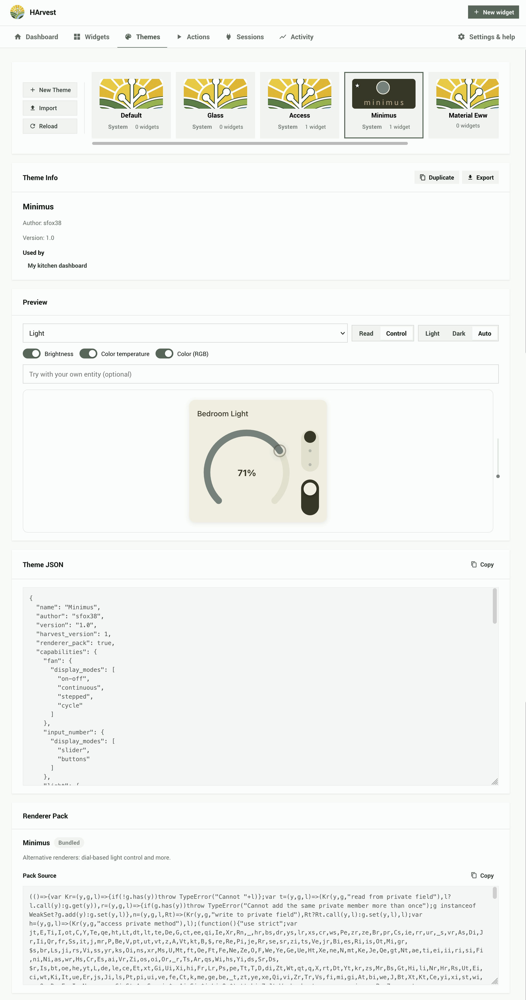
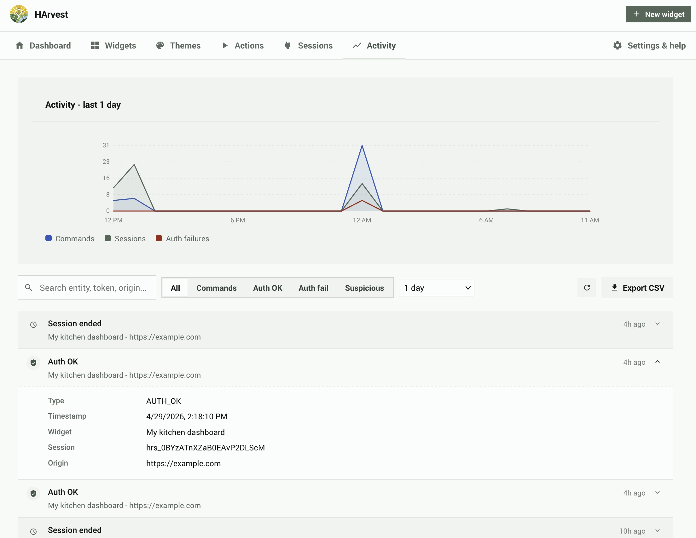

Panel guide
A walkthrough of every screen in the HArvest panel - dashboard, token management, the wizard, themes, settings, and the activity log.
Dashboard
The dashboard is the first screen you see when opening the panel. It shows a real-time snapshot of what's happening across all your widgets.

Stat cards
Five sensor cards across the top of the dashboard:
| Card | What it shows |
|---|---|
| Active Sessions | Number of widget sessions currently connected |
| Active Tokens | Total non-expired, non-revoked tokens |
| Commands Today | Service calls sent through HArvest in the last 24 hours |
| Errors Today | Auth failures and flood protection events in the last 24 hours |
| DB Size | Current activity log database size |
Activity graphs
Three time-series graphs covering the last 24 hours: commands per hour, active sessions over time, and auth failures per hour. These update in real time as events arrive.
Sidebar sections
Below the graphs: a quick view of the last four activity events (click any to open the widget detail), and a list of widgets expiring in the next 7 days.
Widget list
The Widgets tab lists all your widgets. Each row shows the widget name, status badge, primary origin (or "any website"), entity count, active session count, and expiry date.

Status badges
| Status | Meaning |
|---|---|
| Active | Widget is valid and accepting connections |
| Paused | Manually paused - existing sessions are dropped, new connections rejected |
| Expiring soon | Expires within 7 days |
| Inactive | Has an active schedule set, currently outside the allowed hours |
| Expired | Past its expiry date |
| Revoked | Permanently revoked - all sessions dropped, widget cannot be re-enabled |
Filtering and search
Filter by status with the tabs at the top (All, Active, Expiring, Paused). The search box does multi-word fuzzy matching on widget names and origins. Archived (revoked/expired) widgets are collapsed into a separate section at the bottom of the list.
Widget detail
Clicking a widget opens the widget detail screen. This is where you manage everything about a specific widget: its entities, access rules, appearance, and embed code.

The detail screen uses a single-column layout with five tabs across the top:
- Entities - entity management, theme selection, live preview, and per-entity settings
- Embed - code snippets for HTML and WordPress
- Preferences - origins, schedule, display defaults, and rate limits
- Security - token secret, IP allowlists, and session lifetime limits
- Widget Info - usage stats, active sessions, and recent activity
Entities tab
The Entities tab is a split panel. The left side is an entity list; the right side shows the theme picker, a live preview, and per-entity settings for whichever entity you have selected.
Entity list (left panel)
Each row shows a domain icon, the entity ID, and an alias badge (if set). Click a row to select it. Only primary entities appear here; companion entities are managed inside the selected entity's settings card. Use the search input at the top to add new entities with fuzzy matching.
Theme card
The theme picker is always visible at the top of the right panel, even when no entity is selected. It shows a horizontal scrollable strip of theme thumbnails. A text filter below the strip narrows the list by theme name or ID. Themes that include a renderer pack are marked with a ☆ badge. Selecting a theme applies it to the widget and updates the live preview immediately.
Live preview
When an entity is selected, a live preview card appears below the theme picker. It renders the selected entity using the current theme and all applied settings. The preview updates automatically as you change settings, switch themes, or modify display options. It also respects the entity's forced color scheme setting (Auto, Light, or Dark).
Entity settings card
Below the preview, the settings card shows all configuration for the selected entity. Settings are grouped into universal controls (available for all entity types) and domain-specific controls.
Universal controls:
| Setting | Options | Notes |
|---|---|---|
| Icon | icon picker | Replaces the auto-detected icon with any icon from the widget's built-in set (~113 icons). Click the icon button to the left of the Display name field to open the picker. Select an icon, or use "Reset to default" to clear the override. |
| Display name | text input | Overrides the entity's Home Assistant friendly name. Leave blank to use the HA name. |
| Force color scheme | Auto, Light, Dark | Forces the widget card to render in that color scheme regardless of the visitor's system settings. Auto follows the page's color scheme. |
| Access | Read + Control, Read only | Whether the widget can send commands (e.g. toggle a light) or only display state |
Domain-specific controls appear based on the entity's domain and what the active theme's renderer pack supports. If the current theme has no renderer pack, only universal settings are shown.
| Domain | Available controls |
|---|---|
| light | Show brightness, Show color temperature, Show RGB color |
| fan | Animate fan icon, Display mode (Auto, On-Off, Continuous, Stepped, Cycle) |
| climate | Show HVAC modes, Show presets, Show fan mode, Show swing mode |
| cover | Show position slider, Show tilt control |
| media_player | Show transport controls, Show volume, Show source selector |
| sensor, binary_sensor | Graph type (None, Line, Bar), Hours (1-168), Period (1-60 min) |
| input_number | Display mode (Slider, Buttons), Graph settings |
Companions: add or remove companion entities that display inside the selected entity's card. Companion entities do not appear in the left entity list. This section auto-opens when companions already exist.
Excluded attributes: a grid of toggles for each attribute the entity exposes. Excluding an attribute prevents it from being sent to the widget. These toggles are linked to the domain-specific controls above: disabling "Show brightness" for a light also excludes the brightness attribute, and vice versa.
Gestures: maps tap, hold, and double-tap interactions on the card to actions:
| Gesture | Available actions |
|---|---|
| Tap | Toggle entity, trigger a Harvest Action, no action |
| Hold | Toggle entity, trigger a Harvest Action, no action |
| Double tap | Toggle entity, trigger a Harvest Action, no action |
Embed tab
Ready-to-paste embed snippets that update in real time as you change entity or alias settings. The snippet panel has two tabs (HTML and WordPress) and a toggle to switch between entity= and alias= format. The alias format is useful when you don't want entity IDs visible in your page source.
Preferences tab
Collapsible sections for:
- Origins - which websites can use this widget. Add specific URLs (e.g.
https://mysite.com) with optional path restrictions, or enable "allow any origin". - Schedule - restrict access to specific days of the week and hours of the day, in a chosen timezone.
- Rate limits - per-widget override for the global rate limit defaults.
- Display defaults - language, accessibility mode, and offline/error message settings.
Security tab
Token secret for HMAC-signed auth, IP allowlists, and session lifetime limits. See the Security page for details on each option.
Widget Info tab
Usage stats (total sessions, commands, last connection time), a live list of active sessions with the ability to end individual sessions, and a recent activity feed for this widget. This is the same session and activity data that was previously shown in the right sidebar.
Widget wizard
The wizard guides you through creating a new widget in four steps: Design, Origin, Expiry, and Done. It's accessible from the + Create Widget button on the dashboard or widget list.
The wizard is covered step-by-step in the Quick setup page. Additional details on the options available at each step:
Single vs. group mode
Step 1 (Design) has a toggle between Single card, Group of cards, and Page of cards modes. Switching between modes preserves your selected entities. Single mode keeps only the first entity. In Group and Page modes, clicking an entity row selects it for preview, and a [+] badge on each row lets you add companion entities inline.
Live preview
Step 1 shows a live preview of your selected entity as you configure it. The preview updates in real time when you change the permission level, select a different entity, or pick a theme. Companions also appear in the preview.
Alias toggle (Step 4)
The code snippet in Step 4 (Done) has an Aliases toggle. When enabled, the snippet uses 8-character random aliases instead of real entity IDs in the embed code. Both formats work - aliases are just privacy aliases, not a different access mechanism. Aliases for each entity are generated when you select the entity in Step 1 and are stored with the widget permanently.
Embed modes
The snippet panel shows two embed modes:
- Custom element - uses
<hrv-card>and<hrv-group>custom HTML elements - Data attribute - uses plain
<div class="hrv-mount">elements withdata-attributes, for environments where custom elements are blocked or inconvenient
Themes
Theme management lives inside each widget's Entities tab. There is no separate global Themes screen. Each widget picks its own theme, and theme selection affects all entities within that widget.
HArvest ships four bundled themes (Default, Glass, Access, Minimus) and supports unlimited custom themes and user-contributed themes.

Theme picker strip
The theme card at the top of the Entities tab's right panel shows a horizontal scrollable strip of theme thumbnails. Bundled themes are marked with a System badge. Themes that include a renderer pack are marked with a ☆ badge. A text filter below the strip narrows results by theme name or ID.
Renderer packs
Some themes include a renderer pack, which replaces the default card renderers with custom designs. When a pack theme is active, the domain-specific controls in the entity settings card are filtered to show only options the pack supports. Switching between themes preserves your display settings; options the new theme does not support are hidden but kept in storage.
Custom themes
Custom themes are created and managed from the global Settings screen. The theme JSON editor lets you modify CSS variables, preview changes in real time, and export themes as JSON files. See the Theming page for the full theme JSON format and variable reference.
Sharing themes
Any theme can be exported as a JSON file. Custom themes can be imported on any HArvest instance. This is how third-party themes are distributed: the theme author exports their JSON file and shares it, and other users import it.
Settings
The Settings screen has collapsible sections for every global configuration option.
Allowed origins
A registry of websites that widgets can reference. Rather than typing a URL each time you create a widget, you add sites here once with a friendly name. These then appear as options in the wizard and widget detail screen. You can add origins directly from the widget editor too - they sync to this registry.
Connection
| Setting | Default | Notes |
|---|---|---|
| Auth timeout | 10 seconds | Time to complete WebSocket auth before disconnect |
| Keepalive interval | 30 seconds | How often the server pings connected clients |
| Client heartbeat timeout | 60 seconds | Session dropped if no client message within this window |
Rate limiting
| Setting | Default | Notes |
|---|---|---|
| State pushes per second | - | Max state update messages sent per client per second |
| Commands per minute | - | Max service calls per token per minute |
| Auth attempts per token/min | 10 | Failed auth attempts before token is blocked |
| Auth attempts per IP/min | 20 | Failed auth attempts per IP before blocking |
Sessions
| Setting | Default | Notes |
|---|---|---|
| Kill switch | Off | When on, drops ALL active sessions globally and blocks new connections |
| Default session lifetime | 60 minutes | Session duration before the client must renew |
| Max session lifetime | 1440 minutes (24h) | Max duration via renewals |
| Absolute session cap | 72 hours | Hard expiry regardless of renewals |
Activity log
Configure retention period (default 30 days). Shows current database file size and path. The activity log uses SQLite and is stored in your HA config directory.
HA event bus
Toggle which events HArvest fires on the HA event bus. Useful for automations that react to widget activity (e.g. notify you when an auth failure occurs). See the Security page for event payloads.
Widget display defaults
Global defaults for the widget display behavior, applied when a widget doesn't override them:
| Setting | Options | Default |
|---|---|---|
| Language | auto, or any BCP 47 language tag | auto (follows browser) |
| Accessibility mode | standard, enhanced | standard |
| On offline | dim, hide, message, last-state | last-state |
| On error | dim, hide, message | message |
| Offline text | string | (empty) |
| Error text | string | (empty) |
Activity log
The Activity tab shows a searchable, filterable log of all events across all tokens. Events are retained for the configured retention period (default 30 days).

Filters
- Date range - Last 24 hours, Last 7 days, Last 30 days, or custom
- Widget - All widgets, or a specific widget
- Event type - All, AUTH_OK, AUTH_FAIL, COMMAND, SESSION_END, TOKEN_REVOKED, etc.
Event rows
Each event row shows the event type with a color-coded icon, a summary, the widget name (clickable to open that widget's detail screen), and the relative timestamp. Click any row to expand it and see the full event payload: session ID, origin, entity ID, action taken, IP address, and error code where applicable.
CSV export
The Export CSV button at the top of the Activity tab exports all events matching the current filter criteria as a CSV file.